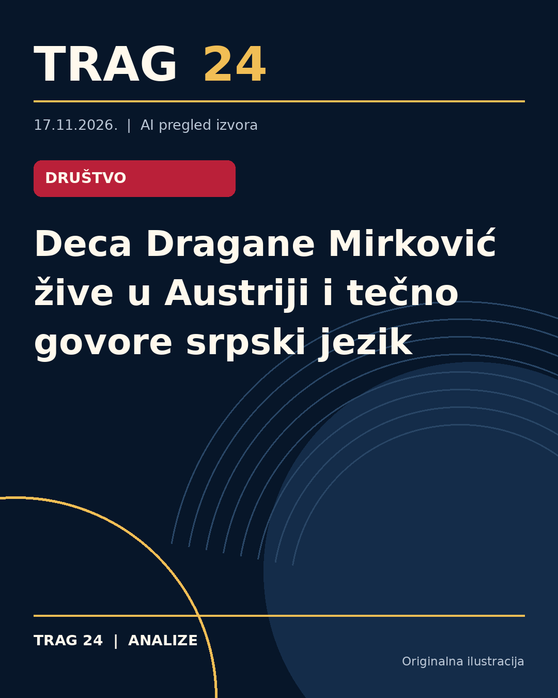

Deca Dragane Mirković žive u Austriji i tečno govore srpski jezik

ŠTA SE DOGODILO
Deca poznate pevačice Dragane Mirković, Marko i Manuela, žive u Austriji i ne bave se javnim poslom, već rade u pevačicinim privatnim firmama. Postavila su se pitanja o tome da li deca govore tečno srpski jezik i gde su odrastala.
HRONOLOGIJA
Dragana Mirković je tokom devedesetih godina gradila svoju karijeru i ulagala značajna sredstva u muzičke projekte. Njena deca su odrastala u Austriji i nisu živela na prostorima Srbije. Nedavno je Marko na Instagramu potvrdio da su srpski jezik naučili pre nemačkog, što ukazuje na dobar nivo poznavanja maternjeg jezika.
ŠTA NAVODE IZVORI
Izvor Telegrafa prenosi da su Marko i Manuela daleko od svetla reflektora, veoma skromni i žive običan život. Dragana Mirković je izjavila da su deca pažljiva i redovno proveravaju kako je ona, naglašavajući važnost zajedništva u porodici. Informer dodaje da je Marko naveo mogućnost napuštanja Austrije, ali ne precizira razloge, dok oba izvora slažu se da deca nisu javne ličnosti i da su odrasla u Austriji.
ŠTA JE POTVRĐENO
Potvrđeno je da deca Dragane Mirković žive u Austriji, da nisu odrastala na prostorima Srbije i da tečno govore srpski jezik. Takođe, potvrđeno je da su uključeni u poslovne aktivnosti svoje majke i da žive skromno, daleko od medijskih reflektora.
ŠTA NIJE POTVRĐENO
Nije potvrđeno koje su tačno razloge Marka za mogući odlazak iz Austrije. Takođe, ne postoje potvrđene informacije o detaljima njihovog privatnog života osim onoga što je direktno navedeno u izraženim izjavama i dostupnim izvorima.
ŠTA OSTАJE OTVORENO: Ostaje otvoreno gde će deca Dragane Mirković u budućnosti živeti i da li će se eventualno više pojavljivati u javnosti. Takođe, nije poznato kako će se razvijati njihove karijere i životne odluke van dosadašnjih okvira.
Izvori
- https://www.telegraf.rs/jetset/vesti-jetset/4434141-deca-dragane-mirkovic-nikada-nisu-ziveli-na-nasim-prostorima-otkrili-su-da-li-tecno-govore-srpski-jezik
- https://informer.rs/dzet-set/estrada/1170516/dragana-mirkovic-decka-jezik-pricaju-srpski
Ova analiza je pripremljena uz pomoć veštačke inteligencije na osnovu javno dostupnih izvora. Navodi izvora nisu nužno nezavisno potvrđeni.